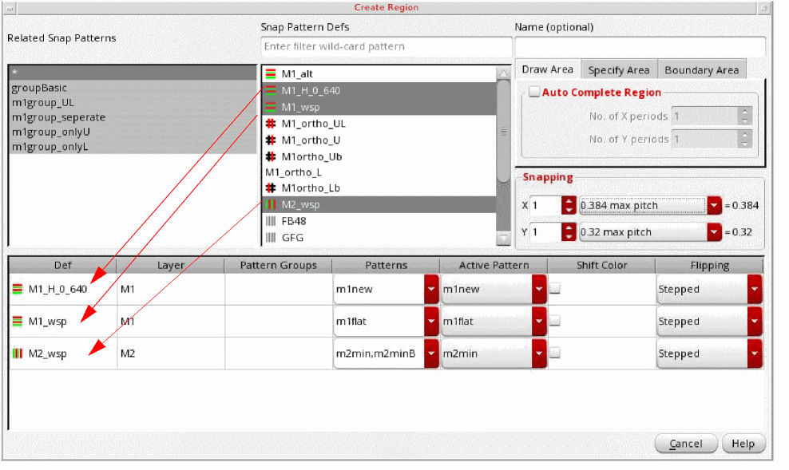
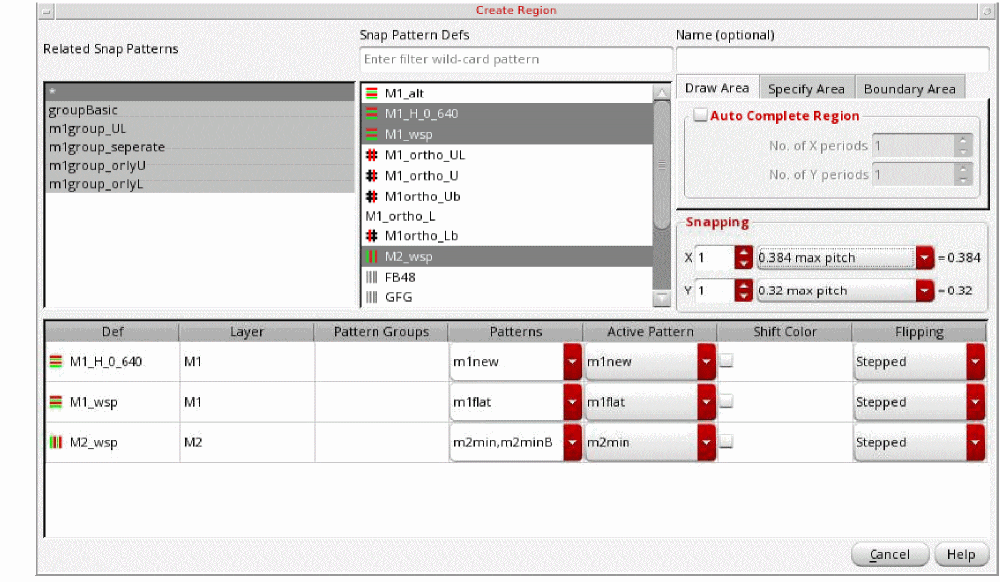
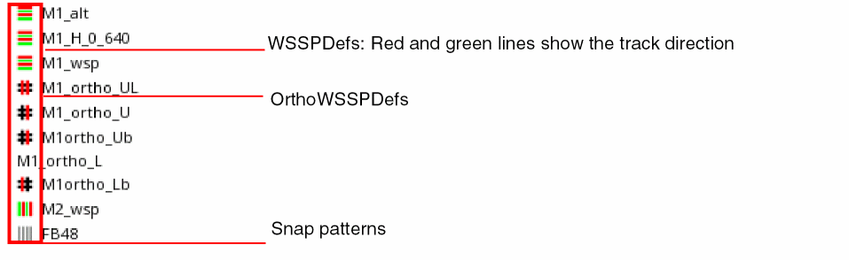
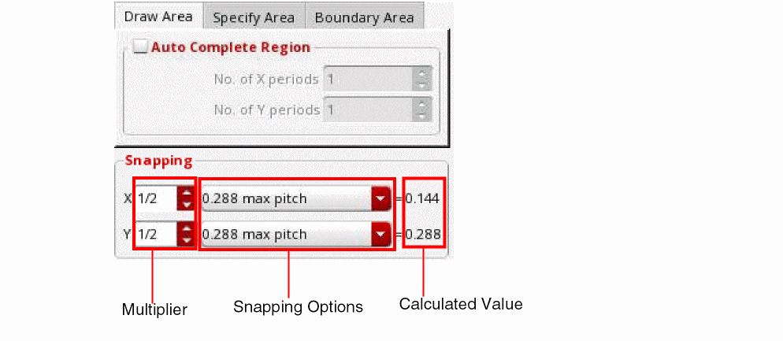
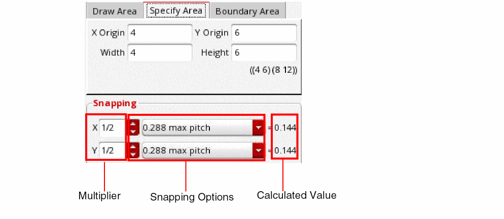

Creating Width Spacing Pattern Regions
You create width spacing pattern regions for areas where you want to use a grid that is different from the global grid. Single-layer and multiple-layer regions can be created and are represented by an oaFigGroup.
To create a width spacing pattern region:
- Click the Create Region icon on the toolbar in the Track Pattern assistant.
-
Press
F3to open the form.
The Create Region form appears.

-
Choose one of the following in the Related Snap Patterns list:
-
Asterisk (*)
Shows all the defined WSSPDefs in the Snap Pattern Defs list. -
A related snap pattern group name
Shows only the WSSPDefs for the selected related snap pattern group in the Snap Pattern Defs list. -
Row template:
The row templates are stored so that you can select a related snap pattern with row templates instead of individual elements.
You can also select multiple related snap patterns. UseShiftorCtrlwith the pointer to toggle between the related snap patterns. The combined related snap patterns are used to select the active WSSPDefs and allowed patterns.
 -
Asterisk (*)
- Choose one or more WSSPDefs in the Snap Pattern Defs list.
-
Choose one or more WSSPDefs in the Snap Pattern Defs list.
A row appears in the table at the bottom of the form for each selected WSSPDef, showing the following:-
Def name
The different element types have icons Along with the addition of row templates, in order to tell the difference between different element types, icons have been added next to the names as well. OrthoWSSPDefs have the black hashtag with red line showing which position – old style ortho WSSPDefs have no icon like M1_ortho_L. Snap patterns get black lines, and WSSPDefs get red&green lines which show the track direction.
 -
Layer
Display the layer name of the patterns (WSP). -
Pattern Group
Choose the pattern groups (WSPG) to allow for the region from the drop-down list of defined pattern groups for the WSSPDef. -
Patterns
Choose the patterns (WSP) to allow for the region from the drop-down list of defined patterns for the WSSPDef. -
Active Pattern
Choose the active pattern from the drop-down list. -
Shift Color
Choose whether colors should be shifted for the pattern. -
Flipping
Choose the repeat mode for the region as one of the following: Stepped, Flipped Odd, or Flipped Even. Unset restores this value to the global grid default.
-
Def name
-
(Optional) Enter a Name.
When selected in the canvas, this region name will appear in Track Pattern assistant at the bottom-left of the form. If not specified, the region will be assigned a name in the following format:FG_x where x is an integer. -
You can choose from one of the following WSP creation options:
-
Draw Area: You can draw an area by specifying the options on this tab.
You can select the Auto Complete Region check box to enable the No. of X periods and No. of Y periods fields.
Snapping: You can derive the WSP region snapping values by specifying the options in this section. This section can be used to specify or select:- A Multiplier: You can specify a multiplier for X and Y fields. The multiplier can be an integer, float, or fraction.
-
Snapping Options: You can select the region snapping values from the following list of options:
max pitch: The pitch with the largest value of the selected WSSPDefs in horizontal or vertical direction.
manufacturing grid: The value specified in the manufacturing grid.
user units: One user unit. For the RSP that you select in the Create Region form, if theregionSnapPitchVerticalandregionSnapPitchHorizontalvalues are specified in therelatedSnapPatternsin the technology database, these values are used as the user unit values for snapping the RSP.
window snap: This is the value specified in the X Snap Spacing and Y Snap Spacing values in the Display Options form.
predefined value: A value predefined for a WSP. -
X/Y Calculated Values: The X and Y snapping values calculated based on options specified above are displayed after the equal to sign in the Snapping section. 
-
Specify Area: You can specify the area of the width spacing pattern region by specifying the options on this tab.
You can specify the X Origin, Y Origin, Width, and Height for the width spacing pattern region.
Snapping: The options in the snapping section are the same as those available in the Draw Area tab. These are explained in the Draw Area section above. -
Boundary Area: You can specify the boundary area, PR boundary, or area boundary of the width spacing pattern region by specifying the options on this tab.
You can select the boundary, PR boundary or area boundary, from the Boundary drop-down list box.
You can also specify the boundary identification details in the Layer Pattern and Purpose fields. You can use the wildcard characters*or?for matching the layer name. The default value for the Purpose field isid. You can also specify a string that represents a purpose in the this field.
When you specify the layer and purpose, all shapes on matching LPPs are added to the Boundary drop-down list box.
-
Draw Area: You can draw an area by specifying the options on this tab.
Related Topics
Launching the Track Pattern Assistant
Track Pattern Assistant Toolbar
Return to top